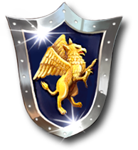
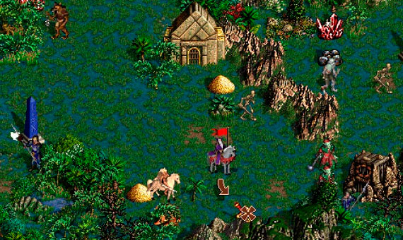

Астрологи оголосили тиждень прокрастинації. Кількість вкладок у браузері зросла вдвічі.
 Heroes of Might and Magic III Наша група у Facebook Стежте за нами в Instagram Замовте сувенірку: 068-209-66-94Heroes of Might and Magic III (Heroes III, HoMM III, укр. Герої Меча і Магії III) — відеогра жанру покрокової стратегії на тематику фентезі. Розроблена компанією { #, New World Computing } як третя гра серії Heroes of Might and Magic та видана компанією { #, 3DO } 22 лютого 1999 для ОС Windows та Mac OS. Для операційних систем на основі Linux гру було випущено в 2000-му році компанією Loki Software ({ #, Вікіпедія }).

Долучайтеся до нашої спільноти фанатів цієї чудової гри!
У нас можна спілкуватися з однодумцями, ділитися фанартом, скачувати фанські карти, кампанії, моди. А ще у нас зібрано велику колекцію тематичних книжок (pdf, djvu) і матеріалів для настільних ігор PnP (print-n-play, надрукуй і грай). Також ви можете придбати сувенірну продукцію - значки, футболки, кружки, наліпки і тому подібне.
© Хмель-HoMM, 2019
poshtar.bob(a)gmail.com